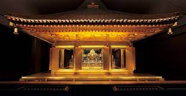
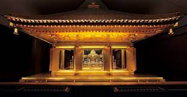

中尊寺金色堂
 

中尊寺は、岩手県西磐井郡平泉町にある天台宗東北大本山の寺院で、
２０１１年に世界文化遺産に登録されました。中尊寺は黄金に輝く
「金色堂」が有名ですが、「薬師堂」「本堂」など他にも見どころ
がたくさんあります。また、建物だけでなく自然と共に織りなす
四季折々の景観も魅力です。
観光情報
所在地 : 岩手県西磐井郡平泉町平泉衣関202
電話番号 : 0191-46-2211
定休日 : 3月1日～2月末日
営業時間 :
8時30分～17時(3月1日～11月3日)
8時30分～16時30分(11月4日～2月末日)
料金 :
大人 800円、高校生 500円
中学生 300円、小学生 200円
[アクセス経路]
ルート1： 一ノ関駅 → 【在来線7分】 平泉駅 → 【バス5分】 中尊寺バス停 → 【徒歩15分】 中尊寺【世界遺産】
ルート2： 平泉前沢IC → 【車5分】 中尊寺【世界遺産】